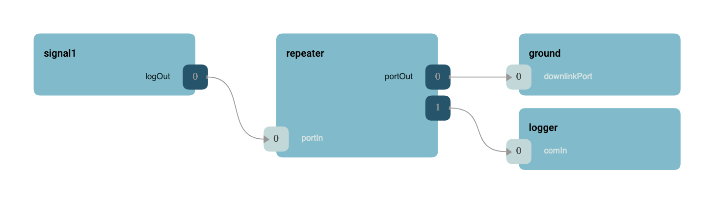

|
F´ Flight Software - C/C++ Documentation
Latest
A framework for building embedded system applications to NASA flight quality standards.
|
|
F´ Flight Software - C/C++ Documentation
Latest
A framework for building embedded system applications to NASA flight quality standards.
|
The GenericRepeater component is designed to take in a port and repeat it to the output multiple times. GenericRepeater is typically used to take in Fw::ComBuffer and log the buffer to a file and send it to the ground interface.
The generic component has an input port and an array of output ports that receive the repeated calls. A typical logging use case is shown below.

Generic repeater maximum output ports are configured using AcConstants.ini as shown below:
Here the repeater will bifurcate the incoming port calls.
The generic repeater does not copy data, and thus reference port calls will not clone references. Care should be taken when passing pointers and references through the repeater. Special care must be taken with items that need to be deallocated, like Svc::BufferManager allocations.
| Name | Description | Validation |
|---|---|---|
| GENREP-001 | The generic repeater shall repeat calls from input to output | unit test |
| Date | Description |
|---|---|
| 2020-12-21 | Initial Draft |
| 2021-01-29 | Updated |
 1.8.17
1.8.17